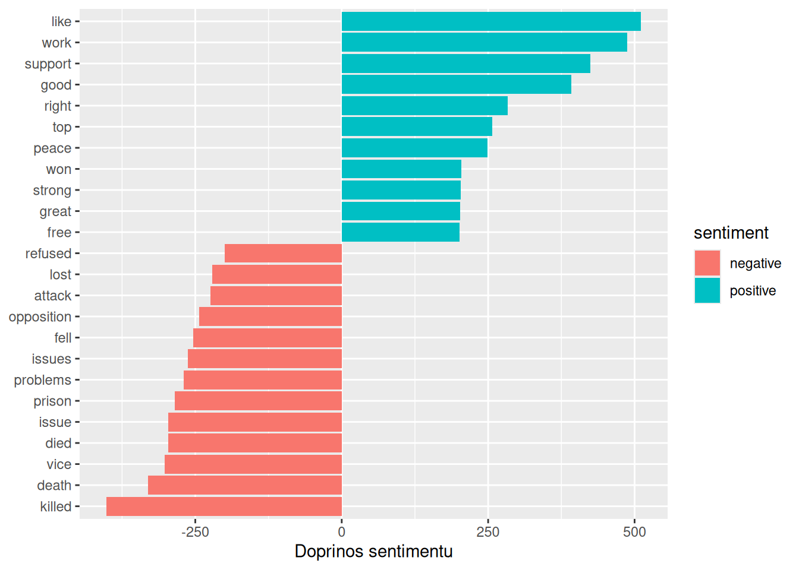
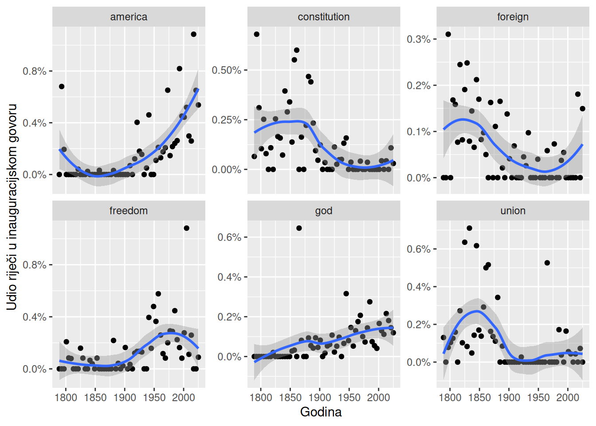

Uredan format pokazao se praktičnim za sve što smo dosad radili, ali izvan paketa tidytext većina alata za analizu teksta radi s drugačijim strukturama kao što su matrica dokumenata i pojmova, rijetka matrica i korpusi. Mnogi gotovi skupovi tekstualnih podataka dolaze upravo u tim oblicima, a neke metode, poput tematskog modeliranja, bez njih ne mogu raditi. Zato nam ne treba izbor između urednih alata i ostalih paketa, nego način da podatke po potrebi prenosimo iz jednog oblika u drugi i natrag.
U prethodnim poglavljima tekst smo analizirali u urednom formatu, odnosno u tablici s jednim tokenom po dokumentu po retku. Međutim, većina postojećih R paketa za obradu prirodnog jezika, osim paketa tidytext, s ovim formatom ne radi. CRAN Task View za obradu prirodnog jezika navodi velik broj paketa koji kao ulaz primaju druge strukture podataka i daju neuredne izlaze. Ti su paketi vrlo korisni, a mnogi postojeći skupovi tekstualnih podataka dostupni su upravo u njihovim formatima. Bez obzira na to koliko su pojedine operacije složene i dotjerane, često je upravo kvaliteta ljepila između njih ono što najviše određuje snagu cijelog sustava. To ljepilo u našem slučaju čine funkcije koje uredan format povezuju s drugim paketima i strukturama podataka. Zahvaljujući njima možemo se osloniti i na postojeće pakete za analizu teksta i na uredne alate.
U ovom poglavlju pokazat ćemo kako se matrica dokumenata i pojmova pretvara u uredan podatkovni okvir i obrnuto te kako se korpusi, koji sirovi tekst čuvaju zajedno s metapodacima dokumenata, pretvaraju u uredne tablice.
9.1 Sređivanje matrice dokumenata i pojmova
Jedna od najčešćih struktura s kojima rade paketi za analizu teksta je matrica dokumenata i pojmova (engl. document-term matrix, DTM) s kojom smo se već susreli u poglavlju o tematskom modeliranju. U njoj:
svaki redak predstavlja jedan dokument (primjerice, knjigu, članak ili odlomak),
svaki stupac predstavlja jedan pojam, a
svaka vrijednost pokazuje koliko se puta taj pojam pojavljuje u tom dokumentu.
Budući da se većina pojmova ne pojavljuje u većini dokumenata, većina vrijednosti u matrici jednaka je nuli. Zato se matrice dokumenata i pojmova obično pohranjuju kao rijetke matrice (engl. sparse matrix). S njima se može raditi kao s običnim matricama, ali su pohranjene u učinkovitijem obliku jer se čuvaju samo vrijednosti koje nisu nula.
Matrica dokumenata i pojmova ne može se izravno koristiti s urednim alatima. Zato paket tidytext nudi dvije vrste funkcija za pretvaranje između tih dvaju oblika:
tidy() koja pretvara matricu dokumenata i pojmova u uredan podatkovni okvir i
cast_ funkcije koje pretvaraju uredan podatkovni okvir s jednim pojmom po retku u matricu, a pri čemu postoje tri inačice koje daju drugu vrstu matrice:
cast_sparse() - rijetku matricu iz paketa Matrix,
cast_dtm() - objekt DocumentTermMatrix iz paketa tm,
cast_dfm() - objekt dfm iz paketa quanteda.
U poglavlju o tematskom modeliranju dokumenti su bili odlomci. Ovdje ćemo za dokument uzeti cijelu bajku, pa ćemo dobiti matricu s pet redaka.
# Matrica dokumenata (bajki) i pojmova (lema)tToBtB_dtm_tales <- tToBtB_word_tokens_stop_words_lemmatize |>count(fairy_tale, lemma) |>cast_dtm(document = fairy_tale, term = lemma, value = n)# PregledtToBtB_dtm_tales
<<DocumentTermMatrix (documents: 5, terms: 1076)>>
Non-/sparse entries: 1421/3959
Sparsity : 74%
Maximal term length: 13
Weighting : term frequency (tf)
# Svih pet redaka i prvih 10 stupacaas.matrix(tToBtB_dtm_tales[, 1:10])
documents: 5 - matrica ima pet dokumenata, odnosno pet bajki;
terms: 1076 - u svim bajkama zajedno pojavljuje se 1076 različitih riječi;
Non-/sparse entries: 1421/3959 - od ukupno 5 × 1076 = 5380 ćelija, 1421 sadrži vrijednost veću od nule, a 3959 vrijednost nula;
Sparsity: 74% - udio ćelija s vrijednošću nula (3959 / 5380 ≈ 74 %);
Maximal term length: 13 - najduža riječ ima 13 znakova;
Weighting: term frequency (tf) - vrijednosti u matrici su učestalosti, odnosno broj pojavljivanja leme u bajci.
Rijetkost od 74 % znači da se većina lema pojavljuje u samo jednoj ili dvje bajke. To možemo izračunati i izravno na način da 1421 ćeliju veću od nule dijelimo na 1076 riječi pa se prosječna riječ pojavljuje u tek 1421 / 1076 ≈ 1,3 bajke. Bajke, dakle, dijele razmjerno malen dio rječnika, a svaka ima mnogo riječi koje se pojavljuju samo u njoj.
Tablica prikazuje koliko se puta prvih deset lema, poredanih abecedno, pojavljuje u svakoj od pet bajki. I na ovom malom isječku vidi se koliko je matrica rijetka jer od 50 ćelija čak 32 sadrže nulu. Riječi afflict, aid, antidote, baby, bad i bang pojavljuju se samo u bajci The Wizard and the Hopping Pot i dobro opisuju njezin sadržaj, lonac koji skakuće i lupa (bang) te seljani koji od čarobnjaka traže pomoć (aid) i lijek (antidote) za svoje nevolje. Riječ age pojavljuje se u četiri bajke, a approach i bear u tri, što su općenitije riječi koje nisu vezane uz jednu priču.
Matrica dokumenata i pojmova sadrži iste podatke kao uredan podatkovni okvir dobiven funkcijom count(), samo u drugom obliku u kojem, umjesto da je svaka kombinacija dokumenta i pojma zaseban redak, dokumenti su u recima, a pojmovi u stupcima.
9.1.1 Sređivanje objekata DocumentTermMatrix
Najčešće korištena implementacija matrice dokumenata i pojmova u R-u je klasa DocumentTermMatrix iz paketa tm. U tom je obliku dostupno mnogo gotovih skupova tekstualnih podataka. Jedan od njih je zbirka novinskih članaka agencije Associated Press koja se nalazi u paketu topicmodels i često se koristi za isprobavanje tematskih modela. Učitavamo je funkcijom data().
# Učitavanje skupa podataka AssociatedPressdata("AssociatedPress", package ="topicmodels")# PregledAssociatedPress
<<DocumentTermMatrix (documents: 2246, terms: 10473)>>
Non-/sparse entries: 302031/23220327
Sparsity : 99%
Maximal term length: 18
Weighting : term frequency (tf)
Skup podataka sadrži 2246 dokumenata (članaka) i 10473 pojma (različite riječi). Ukupno ima 2246 × 10 473 = 23522358 ćelija od kojih samo 302031 sadrži vrijednost veću od nule, a preostalih 23220327 vrijednost nula. Rijetkost je zato 99 %. To je uobičajeno za tekstualne podatke jer, što je dokumenata više, to je veći broj različitih riječi, a svaki dokument sadrži tek mali dio njih. Najduža riječ ima 18 znakova, a vrijednosti u matrici su učestalosti.
Dio matrice možemo pogledati tako da prvo izdvojimo željene retke i stupce, a zatim ih pretvorimo u običnu matricu. Obrnut redoslijed, odnosno pretvaranje cijele matrice funkcijom as.matrix() pa tek onda izdvajanje, stvorio bi u memoriji matricu s više od 23 milijuna ćelija.
# Prvih 5 redaka i prvih 10 stupacaas.matrix(AssociatedPress[1:5, 1:10])
Ako podatke želimo analizirati urednim alatima, onda ih prvo moramo pretvoriti u podatkovni okvir s jednim tokenom po dokumentu po retku. Za to služi funkcija tidy(). Riječ je o općoj funkciji iz paketa broom (točnije, generics) koja neuredne objekte pretvara u uredne podatkovne okvire, a paket tidytext dodaje joj metode za matrice dokumenata i pojmova.
# Pretvaranje DTM-a u uredan formatap_td <-tidy(AssociatedPress)# Ispisap_td
# A tibble: 302,031 × 3
document term count
<int> <chr> <dbl>
1 1 adding 1
2 1 adult 2
3 1 ago 1
4 1 alcohol 1
5 1 allegedly 1
6 1 allen 1
7 1 apparently 2
8 1 appeared 1
9 1 arrested 1
10 1 assault 1
# ℹ 302,021 more rows
Rezultat je uredan podatkovni okvir s tri stupca: document, term i count. U njemu su samo kombinacije s vrijednošću većom od nule. Primjerice, dokument 1 sadrži pojmove adding i adult, ali ne i aaron ili abandon, pa njih u tablici nema. Tako sređena verzija nema redaka u kojima je broj pojavljivanja nula.
U tom obliku podatke možemo dalje obrađivati paketima dplyr, tidytext i ggplot2, kao što smo to radili s bajkama. Primjerice, možemo provesti analizu sentimenta i vidjeti koje su riječi u člancima najviše pridonijele pozitivnom, a koje negativnom sentimentu. Prvo podatke spajamo s leksikonom bing, a zatim za svaku riječ zbrajamo broj pojavljivanja u svim člancima (argument wt = count), zadržavamo riječi koje se pojavljuju barem 200 puta i negativnim riječima dajemo negativan predznak kako bi na grafu bile s lijeve strane.
# Spajanje s leksikonom bingap_sentiments <- ap_td |>inner_join(get_sentiments("bing"), by =c(term ="word"))# Ispisap_sentiments
# A tibble: 30,094 × 4
document term count sentiment
<int> <chr> <dbl> <chr>
1 1 assault 1 negative
2 1 complex 1 negative
3 1 death 1 negative
4 1 died 1 negative
5 1 good 2 positive
6 1 illness 1 negative
7 1 killed 2 negative
8 1 like 2 positive
9 1 liked 1 positive
10 1 miracle 1 positive
# ℹ 30,084 more rows
# Riječi koje su najviše pridonijele sentimentuap_sentiments |># Zbroj pojavljivanja svake riječi u svim člancimacount(sentiment, term, wt = count) |># Riječi koje se pojavljuju barem 200 putafilter(n >=200) |># Negativan predznak za negativne riječimutate(n =if_else(sentiment =="negative", -n, n)) |># Poredak riječi prema doprinosu sentimentumutate(term =reorder(term, n)) |># Vizualizacijaggplot(aes(n, term, fill = sentiment)) +geom_col() +labs(x ="Doprinos sentimentu", y =NULL)

Najčešće pozitivne riječi su like, work, support i good, a najčešće negativne killed, death, vice i died. Graf ujedno pokazuje ograničenje leksikona o kojem smo govorili u poglavlju o analizi sentimenta s obzirom da riječ vice (porok) leksikon svrstava među negativne, ali se u novinskim člancima gotovo sigurno pojavljuje u izrazu vice president (potpredsjednik). Slično tome, like je češće prijedlog („kao”) nego glagol („sviđati se”).
9.1.2 Sređivanje objekata dfm
Drugi paketi za analizu teksta imaju vlastite implementacije matrice dokumenata i pojmova. Jedna od njih je matrica dokumenata i značajki (engl. document-feature matrix, dfm) iz paketa quanteda. Taj paket sadrži korpus inauguracijskih govora američkih predsjednika koji odgovarajućim funkcijama možemo pretvoriti u dfm.
# Učitavanje korpusadata("data_corpus_inaugural", package ="quanteda")# Tokenizacija i stvaranje dfm-ainaug_dfm <- data_corpus_inaugural |>tokens() |>dfm(verbose =FALSE)# Pregledinaug_dfm
Document-feature matrix of: 60 documents, 9,591 features (91.94% sparse) and 4 docvars.
features
docs fellow-citizens of the senate and house representatives :
1789-Washington 1 71 116 1 48 2 2 1
1793-Washington 0 11 13 0 2 0 0 1
1797-Adams 3 140 163 1 130 0 2 0
1801-Jefferson 2 104 130 0 81 0 0 1
1805-Jefferson 0 101 143 0 93 0 0 0
1809-Madison 1 69 104 0 43 0 0 0
features
docs among vicissitudes
1789-Washington 1 1
1793-Washington 0 0
1797-Adams 4 0
1801-Jefferson 1 0
1805-Jefferson 7 0
1809-Madison 0 0
[ reached max_ndoc ... 54 more documents, reached max_nfeat ... 9,581 more features ]
Funkcija tidy() radi i s ovim matricama te ih pretvara u tablicu s jednim tokenom po dokumentu po retku.
# Pretvaranje dfm-a u uredan formatinaug_td <-tidy(inaug_dfm)# Ispisinaug_td
Možemo, primjerice, potražiti riječi koje su najspecifičnije za pojedine govore. To mjeri tf-idf koji računamo funkcijom bind_tf_idf() kao u poglavlju o Zipfovu zakonu i tf-idf-u. Zatim prikazujemo deset riječi s najvećim tf-idf-om u četirima govorima: Lincolnovu iz 1861., Rooseveltovu iz 1933., Kennedyjevu iz 1961. i Obaminu iz 2009. godine.
U tablici najveći tf-idf imaju riječi iz govora Georgea Washingtona iz 1793. godine, iako se svaka od njih pojavljuje samo jednom. Razlog je duljina govora, odnosno to da je najkraći inauguracijski govor u korpusu pa jedno pojavljivanje riječi čini velik udio (tf = 0,0068) svih njegovih riječi. Uz to se riječi poput arrive i upbraidings ne pojavljuju ni u jednom drugom govoru pa imaju najveći mogući idf, ln(60) ≈ 4,09. Ovo je dobar podsjetnik da tf-idf u kratkim dokumentima lako ističe riječi koje se pojavljuju samo jednom.
Tablica i graf pokazuju i da među „riječima” nalaze se i interpunkcijski znakovi, primjerice crtica (—) u Trumpovu govoru iz 2025. i upitnik (?) u Lincolnovu govoru. Funkcija tokens() iz paketa quanteda interpunkciju prema zadanim postavkama zadržava kao zasebne tokene, za razliku od funkcije unnest_tokens() koja je uklanja. Ako to ne želimo, zadajemo tokens(remove_punct = TRUE). Upitnik među Lincolnovim riječima pritom ipak govori da je Lincoln u svom govoru postavio niz retoričkih pitanja.
Graf pokazuje koliko dobro tf-idf ističe ono što je bilo posebno u svakom govoru:
Lincoln, 1861. - riječi secede (odcijepiti se), union (Unija), minority (manjina), lawfully (zakonito), surrendered (predan) i clause (odredba) odražavaju krizu odcjepljenja južnih država uoči Američkog građanskog rata;
Roosevelt, 1933. - riječi emergency (izvanredno stanje), stricken (pogođen), languishes (vene), recovery (oporavak), discipline (disciplina) i leadership (vodstvo) pripadaju vremenu Velike depresije, a changers dolazi iz poznate Rooseveltove osude „mjenjača novca” (money changers) kojima je pripisao krivnju za krizu;
Kennedy, 1961. - riječi sides, both, let, explore, dare i pledge dolaze iz poznatih rečenica koje počinju s Let both sides… (neka obje strane…) i obraćanja suparnicima u Hladnom ratu, a begin iz zaključka Let us begin (počnimo);
Obama, 2009. - riječi icy (leden), waters, storms (oluje) i winter (zima) dolaze iz slikovitih opisa teških vremena, dok jobs (radna mjesta) upućuje na gospodarsku krizu tog vremena. Riječi journey (putovanje), generation (naraštaj) i father (otac) pripadaju dijelovima govora o povijesti zemlje i Obaminoj obitelji.
Kao i kod bajki, tf-idf ovdje ne pokazuje najčešće riječi, nego one po kojima se pojedini govor razlikuje od ostalih, a što su često upravo riječi vezane uz povijesni trenutak u kojem je govor održan.
Urednim podacima možemo pratiti i kako se upotreba riječi mijenjala kroz vrijeme. Iz naziva svakog dokumenta funkcijom extract() izdvajamo godinu, a zatim za svaku godinu računamo ukupan broj riječi. Pritom koristimo funkciju complete() iz paketa tidyr koja dodaje retke s vrijednošću nula za riječi koje se u nekom govoru nisu pojavile. Bez toga bi na grafu nedostajale godine u kojima se riječ nije pojavila pa bi kretanje izgledalo drugačije nego što jest. Na kraju odabiremo šest riječi i prikazujemo udio svake od njih u govorima kroz godine.
# Broj pojavljivanja riječi po godinamayear_term_counts <- inaug_td |># Izdvajanje godine iz naziva dokumentaextract(document, "year", "(\\d+)", convert =TRUE) |># Dodavanje nula za riječi koje se u nekom govoru nisu pojavilecomplete(year, term, fill =list(count =0)) |># Ukupan broj riječi u svakoj godinigroup_by(year) |>mutate(year_total =sum(count)) |>ungroup()# Vizualizacijayear_term_counts |>filter(term %in%c("god", "america", "foreign", "union", "constitution", "freedom")) |>ggplot(aes(year, count / year_total)) +geom_point() +geom_smooth() +facet_wrap(~ term, scales ="free_y") +scale_y_continuous(labels = scales::percent_format()) +labs(x ="Godina", y ="Udio riječi u inauguracijskom govoru")
`geom_smooth()` using method = 'loess' and formula = 'y ~ x'

Svaka točka na grafu jedan je govor, a plava je krivulja izglađeno kretanje (funkcija geom_smooth() ovdje koristi metodu loess) sa sivim pojasom nesigurnosti oko nje. Šest riječi pokazuje tri različita obrasca:
Riječi koje se s vremenom pojavljuju sve češće - America se u 19. stoljeću gotovo ne pojavljuje, a od početka 20. stoljeća udio joj stalno raste, osobito nakon 1950. godine. Najveći je udio, više od 1 %, u jednom od najnovijih govora. Slično, ali blaže, raste i god, od gotovo nule u prvim govorima do oko 0,15 % u današnjima. Izdvaja se jedan govor iz 1860-ih s oko 0,65 % što je najvjerojatnije Lincolnov drugi inauguracijski govor iz 1865. prožet vjerskim motivima.
Riječi koje su s vremenom gotovo nestale.Union je najčešća u prvoj polovini 19. stoljeća s vrhuncem oko 1840-ih i 1850-ih kada je pitanje očuvanja Unije bilo središnje političko pitanje. Nakon Građanskog rata naglo pada, a u govorima između 1900. i 1960. gotovo se ne pojavljuje. Constitution se sve do 1880-ih pojavljuje u razmjerno velikom udjelu, a zatim pada gotovo na nulu, uz blag porast u posljednjim govorima.
Riječi koje su bile najčešće u određenom razdoblju.Freedom je rijetka do početka 20. stoljeća, a najčešća sredinom i u drugoj polovini 20. stoljeća, u vrijeme Drugoga svjetskog rata i Hladnog rata. Najveći je udio, oko 1,1 %, u jednom govoru iz 2000-ih, a u posljednjim se govorima ponovno rjeđe pojavljuje. Foreign je najčešća u 19. stoljeću, zatim polako pada do najmanjeg udjela oko 1950-ih i 1960-ih, a na kraju razdoblja krivulja ponovno raste. Taj porast, međutim, ovisi o samo nekoliko govora, što pokazuje i širok sivi pojas.
Ukratko, američki su predsjednici s vremenom sve rjeđe govorili o Uniji i ustavu, a sve češće o Americi i Bogu. Pritom treba imati na umu da pojedinačni govori mogu snažno utjecati na krivulju, osobito na njezinim krajevima, gdje je govora najmanje. Uz to, riječ ne mora uvijek imati isto značenje, a union se, primjerice, pojavljuje i u izrazu a more perfect union iz preambule Ustava.
9.2 Pretvaranje urednih podataka u matricu
Kao što neki paketi daju matrice dokumenata i pojmova kao gotove podatke ili kao izlaz, tako neki algoritmi takve matrice očekuju kao ulaz. Upravo smo to vidjeli kod funkcije LDA() u poglavlju o tematskom modeliranju. Zato paket tidytext ima cast_ funkcije koje uredan podatkovni okvir pretvaraju u matricu. Primjerice, uređeni skup podataka Associated Pressa funkcijom cast_dtm() možemo vratiti u matricu dokumenata i pojmova.
# Pretvaranje urednih podataka u DocumentTermMatrixap_td |>cast_dtm(document, term, count)
<<DocumentTermMatrix (documents: 2246, terms: 10473)>>
Non-/sparse entries: 302031/23220327
Sparsity : 99%
Maximal term length: 18
Weighting : term frequency (tf)
Dobili smo istu matricu s kojom smo počeli. Na isti način funkcijom cast_dfm() možemo stvoriti objekt dfm iz paketa quanteda.
# Pretvaranje urednih podataka u dfmap_td |>cast_dfm(document, term, count)
Neki alati, osobito oni za strojno učenje, zahtijevaju rijetku matricu iz paketa Matrix koju stvaramo funkcijom cast_sparse().
# Pretvaranje urednih podataka u rijetku matricum <- ap_td |>cast_sparse(document, term, count)# Klasa objektaclass(m)
[1] "dgCMatrix"
attr(,"package")
[1] "Matrix"
# Dimenzije matricedim(m)
[1] 2246 10473
Rezultat je objekt klase dgCMatrix, odnosno rijetka matrica iz paketa Matrix s 2246 redaka i 10473 stupca, kao i izvorna matrica. Ovakvo pretvaranje možemo provesti iz bilo koje uredne tablice koju smo koristili u analizi bajki. Primjerice, uredan podatkovni okvir s lemama možemo pretvoriti u dfm i odmah ga koristiti s funkcijama paketa quanteda.
# Bajke kao dfmtToBtB_dfm <- tToBtB_word_tokens_stop_words_lemmatize |>count(fairy_tale, lemma) |>cast_dfm(document = fairy_tale, term = lemma, value = n)# PregledtToBtB_dfm
Document-feature matrix of: 5 documents, 1,076 features (73.59% sparse) and 0 docvars.
features
docs afflict age aid amazement
1_the_wizard_and_the_hopping_pot 1 2 1 1
2_the_fountain_of_fair_fortune 0 0 0 0
3_the_warlocks_hairy_heart 0 1 0 0
4_babbitty_rabbitty_and_her_cackling_stumps 0 1 0 0
5_the_tale_of_the_three_brothers 0 1 0 1
features
docs antidote approach baby bad bang
1_the_wizard_and_the_hopping_pot 1 1 3 1 3
2_the_fountain_of_fair_fortune 0 1 0 0 0
3_the_warlocks_hairy_heart 0 0 0 0 0
4_babbitty_rabbitty_and_her_cackling_stumps 0 1 0 0 0
5_the_tale_of_the_three_brothers 0 0 0 0 0
features
docs bear
1_the_wizard_and_the_hopping_pot 3
2_the_fountain_of_fair_fortune 1
3_the_warlocks_hairy_heart 1
4_babbitty_rabbitty_and_her_cackling_stumps 0
5_the_tale_of_the_three_brothers 0
[ reached max_nfeat ... 1,066 more features ]
# Deset najčešćih lema u svim bajkamatopfeatures(tToBtB_dfm, n =10)
king witch charlatan wand wizard pot brother death
33 32 27 25 24 23 22 20
heart magic
18 17
Dobili smo isti sadržaj kao u matrici dokumenata i pojmova s početka poglavlja, samo u drugoj klasi objekta: 5 dokumenata, 1076 značajki (riječi) i istih prvih deset stupaca. Paket quanteda rijetkost ispisuje preciznije, 73,59 % umjesto zaokruženih 74 %. Oznaka 0 docvars znači da dfm nema metapodataka o dokumentima jer smo u njega prenijeli samo nazive bajki, riječi i broj pojavljivanja.
Funkcija topfeatures() vraća deset najčešćih riječi u svim bajkama zajedno. To su iste riječi koje smo dobili urednim alatima u poglavlju o deskriptivnoj analizi, a što potvrđuje da pretvaranje u dfm nije promijenilo podatke. Najčešća je riječ king (33 pojavljivanja), a slijede witch (32) i charlatan (27), koje sve tri pripadaju bajci Babbitty Rabbitty and Her Cackling Stumps. Riječi wand, wizard i pot vezane su ponajprije uz The Wizard and the Hopping Pot, brother i death uz The Tale of the Three Brothers, a heart uz The Warlock’s Hairy Heart. Među deset najčešćih riječi tako je zastupljena gotovo svaka bajka, a jedino The Fountain of Fair Fortune nema nijednu riječ koja bi bila izrazito njezina.
Tekst, dakle, možemo učitati i obraditi paketom dplyr i ostalim urednim alatima, a zatim ga pretvoriti u matricu za metode koje je zahtijevaju.
9.3 Sređivanje korpusa s metapodacima
Neke su strukture podataka namijenjene čuvanju zbirki dokumenata prije tokenizacije. Takve se zbirke nazivaju korpusi. Jedan od primjera su objekti klase Corpus iz paketa tm. Oni uz tekst čuvaju i metapodatke o svakom dokumentu, primjerice oznaku (ID), datum i vrijeme, naslov ili jezik. Paket tm sadrži korpus acq s 50 članaka novinske agencije Reuters o preuzimanjima tvrtki.
# Učitavanje korpusa acqdata("acq")# Pregled korpusaacq
Korpus je organiziran kao popis (lista) u kojem svaki element sadrži tekst i metapodatke jednog dokumenta. To je fleksibilan način čuvanja dokumenata, ali nije prikladan za obradu urednim alatima. Zato funkcijom tidy() korpus pretvaramo u tablicu s jednim retkom po dokumentu, u kojoj su metapodaci stupci uz tekst.
# Pretvaranje korpusa u tablicu s jednim retkom po dokumentuacq_td <-tidy(acq)# Ispisacq_td
# A tibble: 50 × 16
author datetimestamp description heading id language origin topics
<chr> <dttm> <chr> <chr> <chr> <chr> <chr> <chr>
1 <NA> 1987-02-26 15:18:06 "" COMPUT… 10 en Reute… YES
2 <NA> 1987-02-26 15:19:15 "" OHIO M… 12 en Reute… YES
3 <NA> 1987-02-26 15:49:56 "" MCLEAN… 44 en Reute… YES
4 By Cal … 1987-02-26 15:51:17 "" CHEMLA… 45 en Reute… YES
5 <NA> 1987-02-26 16:08:33 "" <COFAB… 68 en Reute… YES
6 <NA> 1987-02-26 16:32:37 "" INVEST… 96 en Reute… YES
7 By Patt… 1987-02-26 16:43:13 "" AMERIC… 110 en Reute… YES
8 <NA> 1987-02-26 16:59:25 "" HONG K… 125 en Reute… YES
9 <NA> 1987-02-26 17:01:28 "" LIEBER… 128 en Reute… YES
10 <NA> 1987-02-26 17:08:27 "" GULF A… 134 en Reute… YES
# ℹ 40 more rows
# ℹ 8 more variables: lewissplit <chr>, cgisplit <chr>, oldid <chr>,
# places <named list>, people <lgl>, orgs <lgl>, exchanges <lgl>, text <chr>
Tablica ima 50 redaka, po jedan za svaki članak, i 16 stupaca: uz tekst (text) tu su metapodaci poput autora (author), vremena objave (datetimestamp), naslova (heading), oznake (id), jezika (language) i mjesta (places).
Takvu tablicu dalje obrađujemo kao i bajke. Funkcijom unnest_tokens() tokeniziramo tekst i uklanjamo zaustavne riječi. Stupac places prije toga izbacujemo jer je riječ o listi koju funkcija unnest_tokens() ne može prenijeti u tokeniziranu tablicu. Zatim možemo pronaći najčešće riječi u svih 50 članaka ili riječi koje su najspecifičnije za pojedini članak.
# Tokenizacija i uklanjanje zaustavnih riječiacq_tokens <- acq_td |>select(-places) |>unnest_tokens(word, text) |>anti_join(stop_words, by ="word")# Najčešće riječiacq_tokens |>count(word, sort =TRUE)
# A tibble: 1,566 × 2
word n
<chr> <int>
1 dlrs 100
2 pct 70
3 mln 65
4 company 63
5 shares 52
6 reuter 50
7 stock 46
8 offer 34
9 share 34
10 american 28
# ℹ 1,556 more rows
# Riječi s najvećim tf-idf-omacq_tokens |>count(id, word) |>bind_tf_idf(word, id, n) |>arrange(desc(tf_idf))
Najčešće riječi u člancima su dlrs (dolari), pct (posto), mln (milijun), company (tvrtka), shares (dionice) i reuter, što odgovara financijskim vijestima o preuzimanjima tvrtki. Riječ reuter nije sadržajna, nego se nalazi na kraju svakog članka pa bismo je u ozbiljnijoj analizi dodali među vlastite zaustavne riječi. Najveći tf-idf imaju imena tvrtki, primjerice groupe, liebert, esselte i burdett jer se svako od njih pojavljuje u samo jednom ili dva članka, a u njima više puta.
Korpusi su čest oblik u kojem paketi za učitavanje teksta vraćaju podatke pa nam funkcija tidy() otvara pristup velikom broju tekstualnih zbirki. Kad podatke jednom pretvorimo u uredan oblik, na njih možemo primijeniti sve što smo naučili u prethodnim poglavljima.